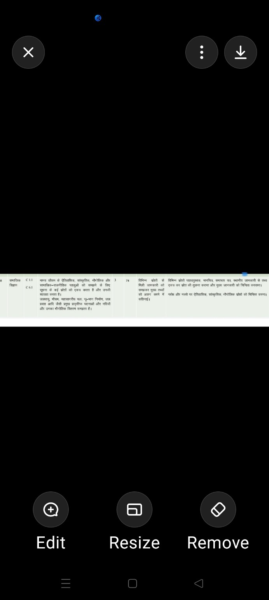

📌 आपके दिए हुए स्क्रीनशॉट को पाठ्यक्रम का आधार बनाया गया है।📜 टॉपिक 1
मानव जीवन के ऐतिहासिक, सांस्कृतिक, भौगोलिक और सामाजिक-राजनीतिक पहलुओं को समझना तथा विभिन्न स्रोतों से जानकारी एकत्र करना।
🌍 टॉपिक 2
जलवायु, मौसम, महासागरीय चक्र, भू-भाग निर्माण, जल प्रवाह, प्राकृतिक घटनाएँ और नदियों का भौगोलिक वितरण।
✅
सही उत्तरहरा
❌
गलत उत्तरलाल
💡
नीचे सरल समाधान📊
प्रगति देखें🏆
अभ्यास करें